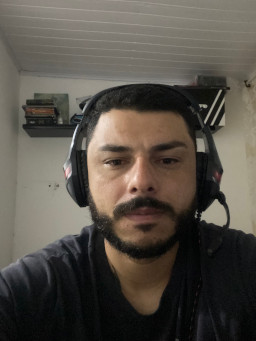

Meu nome é Bruno, tenho 33 anos e sou solteiro. Nasci e fui criado em São Paulo, uma cidade que me ensinou a ser resiliente e determinado. Sou um trabalhador incansável, sempre correndo atrás dos meus objetivos, buscando evoluir tanto pessoal quanto profissionalmente. Desde cedo, desenvolvi uma paixão por tecnologia, o que me levou a me formar em Gestão de TI.
Atualmente, estou estudando Front-End na Mate Academy, uma jornada que tem sido desafiadora e enriquecedora. Sou dedicado e acredito que o aprendizado contínuo é a chave para o sucesso. Além disso, adoro enfrentar novos desafios e estou sempre em busca de maneiras de aprimorar minhas habilidades. Acredito que, com foco e persistência, posso alcançar meus objetivos e contribuir de forma significativa para o mundo da tecnologia.
